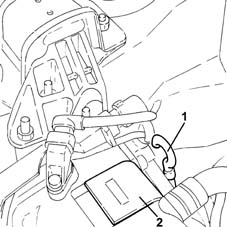
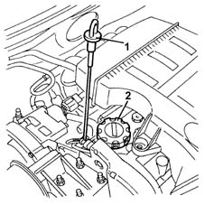
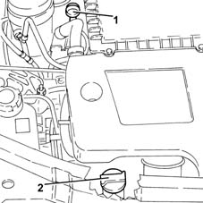

0010T11 engine oil check level and top up
- Path
- Procedures > 00 MAINTENANCE > 0010 NEW UNITS AND PLANNED MAINTENANCE'. > 0010T vehicle oil and fluids > 0010T11 engine oil check level and top up
- Kind
- repair procedure (removal / refitting; the operation number is the code)
- Applies to
- all engines; all production periods
- Interactive page
- https://sloeber94.github.io/elrnDB-lYpsln/en/#/2428822
Applies to: all engines; all production periods
Applies to: all engines; all production periods
Applies to: all engines; all production periods
Applies to: engines: 1.2 8v; all production periods
1. Remove the engine oil dipstick, clean and then fully reinsert. Remove and check the level is between the MIN and MAX limits.
2. If the oil level is close to or even below the MIN level, add the recommended oil through the oil filler opening up to the MAX mark.
 | Type | Component | Name | Qty. |
|---|---|---|---|---|
- | Oli [l] | ENGINE LUBRICATION CIRCUIT | SELENIA 20 K | - |
For the optimum operation of the engine in particularly harsh climatic conditions, use the recommended oil for the engine lubrication circuit.
| Type | Component | Name | Qty. |
|---|---|---|---|---|
- | Oli [l] | ENGINE LUBRICATION CIRCUIT | SELENIA PERFORMER | - |

Applies to: engines: 1.2 16v, 1.4 16v; all production periods
1. Remove the engine oil dipstick, clean and then fully reinsert. Remove and check the level is between the MIN and MAX limits.
2. If the oil level is close to or even below the MIN level, add the recommended oil through the oil filler opening up to the MAX mark.
| Type | Component | Name | Qty. |
|---|---|---|---|---|
- | Oli [l] | ENGINE LUBRICATION CIRCUIT | SELENIA 20 K | - |
For the optimum operation of the engine in particularly harsh climatic conditions, use the recommended oil for the engine lubrication circuit.
| Type | Component | Name | Qty. |
|---|---|---|---|---|
- | Oli [l] | ENGINE LUBRICATION CIRCUIT | SELENIA PERFORMER | - |

Applies to: engines: 1.3 JTD; all production periods
1. Remove the engine oil dipstick, clean and then fully reinsert. Remove and check the level is between the MIN and MAX limits.
2. If the oil level is close to or even below the MIN level, add the recommended oil through the oil filler opening up to the MAX mark.
| Type | Component | Name | Qty. |
|---|---|---|---|---|
- | Oli [l] | ENGINE OIL LEVEL CHECK AND TOP-UP | SELENIA WR | 3.0 |

Topics that link to this page (17)
- 1020A20 crank case oil sump - r + r clean seals for sealant application
- 1020A30 engine oil drain plug - replace
- 1020B10 cover of timing system with chain drive - r + r replace oil seal and gasket
- 1020D14 front crank shaft oil seal cover - r + r and replace seals for versions with oil pump on crank shaft, timing side
- 1020D18 front crank shaft cover oil seal - replace
- 1020D26 flywheel side oil seal cover - r+r
- 1020D30 oil seal cover, fly wheel side - r + r and replace seals
- 1028H10 connecting rod and piston set - r r
- 1028H20 piston with connecting rod - r r
- 1032A12 CHAIN AND GEARS for timing system - R.R. for timing or Replacement.
- 1032B46 toothed drive pulley - r + r
- 1032B60 bolt pulley - r r
- 1032C40 Timing CHAIN TENSIONER PLATE - R.R.
- 1084B12 engine oil pump - r+r
- 1084B26 emgine oil intake duct - r r
- 1084B30 engine oil filter r r
- 1084B45 RIGID air supply PIPE between air-air heat exchanger and intermediate hose - R.R.